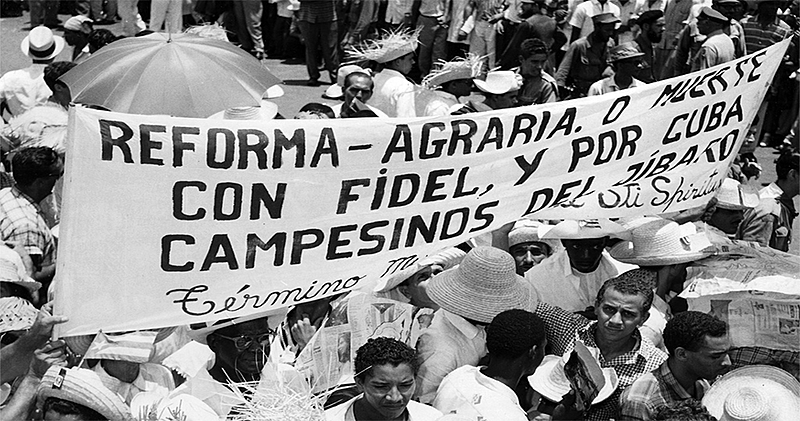
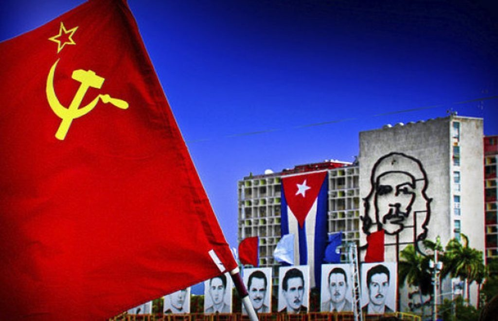

Cuba
Faltou:
Cuba: Quem é?
•País insular localizado no mar do caribe, na América Central (Compreende as ilhas de Cuba, Juventude e arquipélagos menores).
• Tem uma área oficial de 109.884 km, e mais de 11 milhões de habitantes.
• Os povos originários de Cuba são os Ciboneses Taínos, até a colonização Espanhola no século XV. E DEPOIS DA COLONIZAçãO? E os escravos africanos?
Colonização, república e ditadura
Século XV - Formação Histórica e Econômica
A história escrita da ilha começa com a penetração da Espanha e a criação da Capitania Geral de Cuba, cujo governo é instalado em Havana onde durante aproximadamente 400 anos, a ilha ficou sob o domínio dos espanhóis, que cultivavam tabaco e cana-de-açúcar (ligação com o texto sobre atividades econômicas) com a utilização de mão-de-obra escrava africana até que em 1762 a cidade foi ocupada brevemente pelo Reino da Grã-Bretanha, porém retornou à posse da Espanha depois de uma troca pelo território da Flórida, que atualmente pertence aos Estados Unidos. Uma série de rebeliões ao longo do século XIX não resultaram no domínio espanhol, porém elas reforçaram tensões entre os países que resultaram na Guerra hispano-americana, em 1898.
1898 - Independência Cubana
Após o fim da guerra hispano-americana, foi assinado o tratado de Paris, que cedia as colônias espanholas de Guam, Filipinas, Porto Rico e Cuba aos Estados Unidos, cuja qual permaneceu no governo da ilha durante 4 anos, e após isso oficializando assim a independência de Cuba.
1952
Faltou falar da independência de Cuba e a influência dos EUA (https://mundoeducacao.uol.com.br/historia-america/emenda-platt.htm)
Durante os primeiros anos de independência da ilha ainda remanescem resquícios da influência americana sobre a economia e a política de Cuba, tal cenário se manteve até o ano de 1959, quando o ditador Fulgêncio Batista foi destituído pelo movimento de caráter revolucionário, antiamericano e anticapitalista, liderado por Fidel Castro e com o apoio de outros revolucionários como Che Guevara foi criado um movimento revolucionário chamado Movimento 26 de Julho, composto de jovens e estudantes que iniciaram uma luta contra Batista.

fonte: https://www.lavrapalavra.com/2020/12/01/fidel-castro-e-a-revolucao-cubana/
1959
Entre as ações tomadas por Fidel destaca-se a reforma agrária, cuja qual desapropriou em grande parte americanos, que acabaram por não receber o valor esperado por suas terras, isso provocou grande descontentamento entre os proprietários americanos e levou o governo dos Estados Unidos a considerar o líder cubano como um inimigo a ser eliminado. Assim, tratou de desestabilizar economicamente o novo governo cubano, impondo, em 1960, o embargo econômico, comercial e financeiro a Cuba e, paralelamente, treinando ex-militares de Batista para invadir a ilha entre 17 e 21 de abril de 1961, cerca de 1.500 exilados cubanos tentaram uma invasão frustrada na Baía dos Porcos. Foram rechaçados: 300 deles morreram e 1.200 foram aprisionados e cerca de USD $50 milhões foram enviados a Cuba em alimentos e medicamentos, pela libertação dos exilados. As ações americanas levaram o governo cubano a se aproximar da União Soviética e, dois anos mais tarde, tomar rumos governamentais de orientação marxista elaborando assim uma nova constituição chamada de Lei Fundamental.


1962
Após a invasão da Baía dos Porcos, as tensões provocadas pela Guerra Fria e o posicionamento cubano em favor a URSS, Khrushchov decide por instalar secretamente um conjunto de mísseis em Cuba, tais ações atingiram o ápice das tensões entre os dois blocos, após a resolução dos conflitos políticos foi então trocada a retirada dos mísseis em Cuba pela permanência da soberania da ilha, atualmente já se tem a informação de que também haviam mísseis implantados na região da Turquia, por parte dos EUA.
Fatos atuais (1991 com o fim da URSS) após e relação de CUba com os EUA:
Conclusão
Com o final da guerra fria e o desmanche do bloco soviético, muitas das políticas econômicas contra Cuba ainda se mantinham, e com a falta do apoio da URSS com a maioria dos recursos, a economia cubana entrou em rápido declínio juntamente com graves problemas de desabastecimento nas diversas áreas, a partir do início do século XXI, a economia se recuperava lentamente, porém eventos como o furacão Michelle, a queda dos preços mundiais do níquel e a queda do investimento estrangeiro atrasaram catastroficamente a retomada da estabilidade do país que juntamente com a pouca extensão territorial atualmente depende em grande parte do turismo da região, sendo mais uma vez afetada pela recente pandemia de COVID-19.
Fontes:
https://pt.wikipedia.org/wiki/Cuba
https://www.scielo.br/j/op/a/QKLhVCqDQVzNfh5xJpVtwdc/?lang=pt